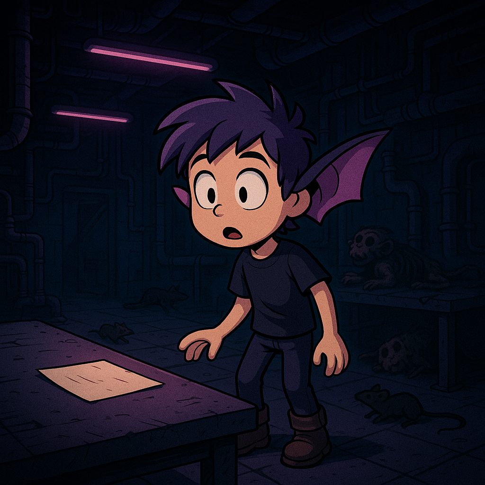

RICK se despierta en la cama de un laboratorio abandonado, en el que encuentra restos de animal y cápsulas de hibernación con animales y humanos dentro.
Parte 1: El despertar
Parte 2: Extraños cambios
No entiende qué le pasa, pero tiene muy poca visión y mucha capacidad para escuchar. Ha notado que le han salido unas orejas de murciélago.
Parte 3: Descubrimiento
Cuando lee una nota que encuentra en la sala, se da cuenta de que ha sido un experimento fallido de un intento de mezcla de animales con humanos.
Parte 4: Advertencia

Le advierten que debe tener cuidado, ya que algunas pruebas sí que salieron bien y se fueron de control.